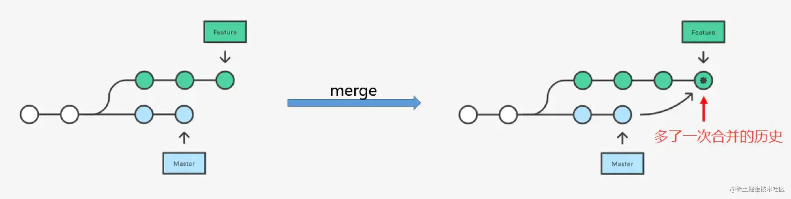
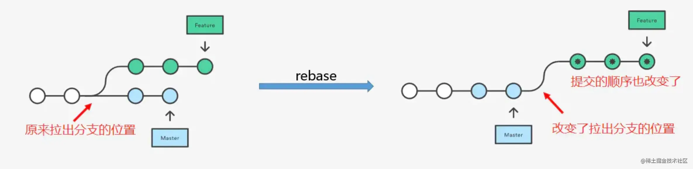
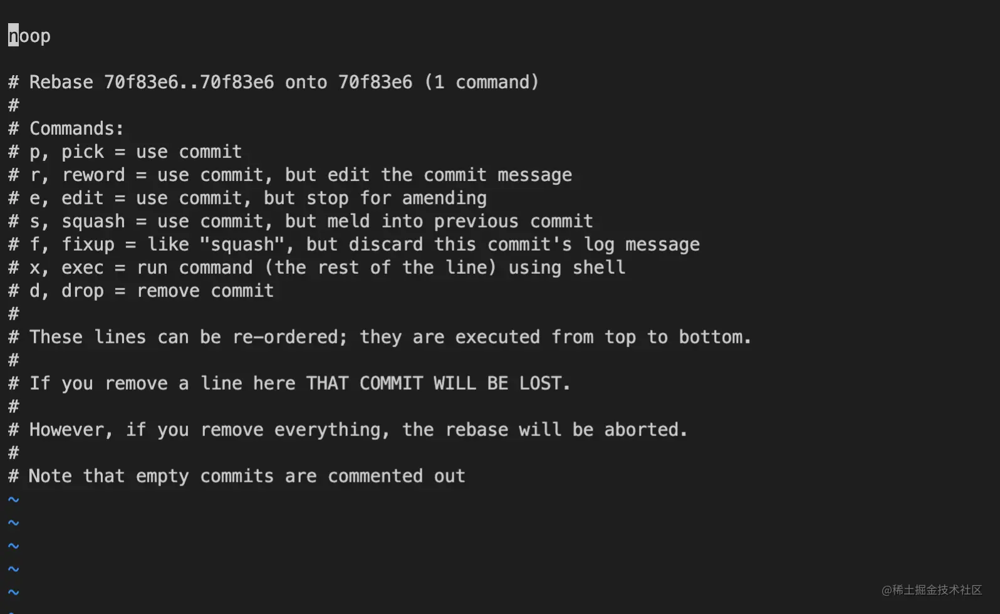

git常用命令
git clone
git clone 命令用于将存储库克隆到本地。
git clone [url] // 将存储库克隆到本地
git init
git init 命令用于在目录中创建新的 Git 仓库。
git init // 创建新的 Git 仓库，在当前路径下生成 .git 目录
git remote
git remote 用于管理跟踪远程仓库。
git remote -v // 查看连接的远程仓库地址
git remote add origin [gitUrl] // 为本地仓库添加远程仓库地址
git push -u origin master // 将本地仓库的master和远程仓库的master进行关联
git remote origin set-url [gitUrl] // 为本地仓库修改远程仓库地址
git remote rm origin // 为本地仓库删除远程仓库连接
git checkout
git checkout 命令用于切换分支。
git checkout [branchName] // 切换分支
git checkout -b [branchName] // 新建分支并切换到该分支
git branch
git branch 命令用于查看、创建、删除分支。
git branch //查看本地分支
git branch -r //查看远程分支
git branch -a //查看本地和远程分支
git branch [branchName] //新建本地分支但不切换
git branch -D [branchName] //删除本地分支
git branch -m [oldBranchName] [newBranchName] //重新命名分支
git tag
git tag 用于创建、删除、查看标签。
git tag [tagName] // 新建标签
git tag // 查看标签列表
git tag -d [tagName] // 删除标签
git push origin [tagName] // 推送标签到远程仓库
git add
git add 命令用于将本地文件添加到暂存区。
git add [file1] [file2] // 添加指定文件至暂存区
git add [dir] // 添加指定目录至暂存区
git add . // 添加当前目录下所有文件至暂存区
git add -A // 添加当前仓库下的所有文件改动至暂存区
git commit
git commit 命令用于将暂存区内容添加到本地仓库中。
git commit -m 'xxx' // 将暂存区文件添加到本地仓库，并记录下备注
git commit -m 'xxx' -n // 将暂存区文件添加到本地仓库，并记录下备注，同时跳过 husky hooks 设置的规则校验
git commit -am 'xxx' // 将文件添加到暂存区，再添加到本地仓库，并记录下备注
git push
git push 命令用于将本地分支推送到远程仓库。
git push [remoteName] [branchName] // 推送分支
git push --set-upstream [remoteName] [branchName] // 推送分支并建立关联关系
git pull
git pull 命令用于从远程仓库拉取代码并合并到本地当前分支。
git pull // 从远程仓库拉取代码合并到本地，等同于 git fetch && git merge
git pull --rebase // 使用rebase的模式进行合并
git fetch
git fetch 命令用于从远程获取代码库。
git fetch // 从所有远程仓库拉取当前分支代码
git fetch [remoteName] // 从指定远程仓库拉取当前分支代码
git fetch --all // 获取所有远程仓库所有分支的更新
git cherry-pick
git cherry-pick 命令用于获取指定的 commit，可以将分支 a 上的 commit 1，复制到分支 b上。
git cherry-pick [commitId] // 获取指定的commit
git merge
git merge 命令用于分支合并，将其他分支的内容合并到当前分支中。
git merge [branchName]

git rebase
git rebase 用于分支变基。
git rebase master // 将当前分支变基到 master 分支上

git rebase -i 交互模式：
git rebase -i [commitId] // 基于 commitId 进行 rebase，交互式变基，可以重新编辑 commit，比如压缩合并

git reset
git reset 命令用于回退版本，可以指定退回某一次提交的版本。
git reset HEAD^ // 回退所有内容到上一个版本
git reset HEAD^ [filename] // 回退某文件到上一个版本
git reset [commitId] // 回退所有内容到指定版本
git reset --soft HEAD~1 // 回退本地仓库到上一个版本
git reset --hard HEAD~1 // 回退本地仓库到上一个版本，并删除工作区所有未提交的修改内容
git revert
git revert 指令用于回滚提交，可以回滚某一次提交记录。
git revert [commitId] // 回滚某次提交
git revert [commitId] -m 1 // 回滚某次 merge 的 commit，1 代表保留主分支代码
git stash
git stash 用于暂存文件。
git stash // 暂存文件
git stash save 'aa' // 暂存文件，添加备注
git stash pop // 应用最近一次暂存文件，并删除暂存记录
git stash apply // 应用最近一次暂存，但不删除该暂存记录
git stash apply stash@{第几次暂存的代码，例如0} // 应用某一次暂存，但不删除该暂存记录；
git stash list // 暂存记录
git stash clear // 删除所有暂存记录
git reflog
git reflog 记录了所有的 commit 操作记录，便于错误操作后找回。
git reflog
git rm
git rm 用于从 git 仓库删除指定文件或目录。
git rm [filname]
git rm [dir]
git log
git log 命令用于查看 git commit 记录。
git log // 查看所有 commit 记录
git log --grep 瀑布流 // 搜索 commit msg 有瀑布流关键字的 记录